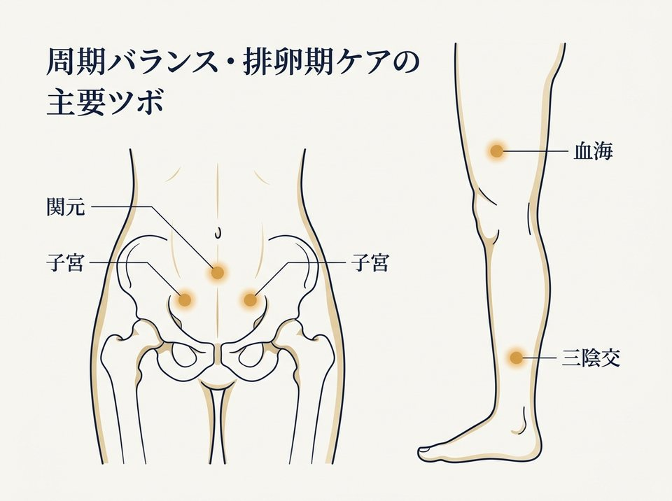

子宮内膜増殖症の鍼灸
子宮内膜増殖症は異型・悪性化リスクの婦人科評価が必須です。専門治療を最優先とし、主治医許可下で自律神経と血流を整える補助ケアを行います。


院長YouTube解説・関連動画
症状は、月経過多、月経痛、不正出血、月経不順など
子宮内膜増殖症の症状は、月経過多、月経痛、不正出血、月経不順などです。月経過多が続くと、貧血や体のだるさや疲れやすくさ、動悸などのも現れます。
子宮内膜増殖症の症状の中でも特徴的な症状は、月経の量が増えることです。これは、生理の時に剥離する内膜が増えるために起こる症状で、血の塊のようなものが混ざることもあります。
異型のない子宮内膜増殖症の場合は、がんに進行することは非常に少ないと言われていますが、異型のある子宮増殖症の場合は子宮体がんの前がん状態であると言われています。
① 不正出血
最も多い症状です。生理以外の時期の出血がだらだら続く、止まらない、量が多いなどが見られます。月経の間隔が短くなったり長くなったりします。この不正出血は、過剰に増えた内膜が部分的に壊れて剥がれ落ちることが原因です。また、プロゲステロンが不足しているため、内膜が一気に脱落できず、少量出血が長く続く、生理がいつまでも終わらないと感じる方も多いです。
② 月経過多
経血の量が増える、血塊が出る、生理期間が7日以上続くなどが見られます。これは、内膜が厚くなりすぎて剥がれる面積が増えるためです。慢性的に続くと貧血を起こすことがあります。
③ 無月経または希発月経
排卵がない周期が続き、生理が2〜3か月来ないこともあります。無排卵だとプロゲステロンが分泌されないため、内膜が剥がれるきっかけがなく、生理が来ないまま、子宮の中で内膜だけがどんどん厚くなる状態になります。
④ 下腹部の痛み・張り感
子宮内膜が厚くなると、子宮が軽い炎症や緊張を起こします。子宮が拡張し、鈍い下腹部痛や腰痛を感じます。さらに経血がスムーズに出ないと、生理時の痛みが強くなることもあります。
⑤ 貧血症状
長期間の過多月経や不正出血が続くと、倦怠感やめまい、立ちくらみ、動悸や息切れ、顔色の悪さといった鉄欠乏性貧血の症状が現れます。
⑥ 妊娠しにくい
排卵障害と内膜の異常増殖により、受精卵が着床しづらくなります。特に、無排卵周期症や多嚢胞性卵巣症候群を併発している方では、ホルモンの乱れが持続し、不妊につながりやすいです。
⑦ 更年期特有の変化
更年期前後の女性では、排卵が不安定になり、月経周期の乱れ、量の増減が極端になる、閉経が近づいても少量出血が続くといった症状が出やすくなります。この時期の不正出血は、子宮体がんの前段階であることもあるため、要注意です。
子宮内膜増殖症の改善方法は、ホルモン剤の内服です。ホルモン剤を使うことによって月経を出させ、子宮内膜をはがすのです。
主に使われるホルモン剤には、プラノバールやルテジオン、デュファストンなどがあります。乳がんなどの病気や糖尿病、高血圧などがある場合や、改善に長い期間がかかる場合には、プロゲストンやデュファストンを使います。
子宮内膜増殖症の改善方法は内膜の過剰な増殖を抑えることでエストロゲン優位を是正することが目的です。
第一選択はホルモン投与です。プロゲステロンを投与し、過剰なエストロゲン作用を中和するため、プロゲステロンを補います。無排卵が原因の場合は、排卵を回復させるためにクロミフェンやインスリン抵抗性改善薬を使用します。
内膜異型を伴う場合は早期の子宮摘出が推奨されます。妊娠希望がある場合は、高用量プロゲステロンと厳重経過観察で温存することもも可能です。
鍼灸は原因となるホルモンバランスや自律神経の乱れを整える点で、非常に有効な補助的改善方法です。子宮内膜を厚くする根本原因を改善することで、再発防止や症状の安定化、月経周期の正常化に役立つのです。
ホルモンの分泌は、視床下部、下垂体、卵巣軸によってコントロールされています。この軸は、自律神経と密接に連動しており、ストレス、睡眠不足、冷えなどで乱れやすいのが特徴です。鍼灸は、特に迷走神経を介して視床下部に働きかける効果、ストレスホルモンの分泌を抑える効果、交感神経の緊張を緩め、血流とホルモン分泌のリズムを回復させる効果があります。
結果として、無排卵や黄体機能不全を改善、エストロゲン過剰状態のリセット、月経周期が安定してくるといった変化が現れます。
さらに、エストロゲンやプロゲステロンは、卵巣への血流量に比例して分泌が活性化されます。しかし、冷えやストレスで骨盤内の循環が悪いと、ホルモン反応が鈍くなります。鍼灸刺激によって骨盤内血流を増やし、卵巣や子宮の代謝を高める効果や子宮内膜の過剰増殖を防ぎ内膜のターンオーバーを正常化する効果が期待されます。
異型のない子宮内膜増殖症の場合は、経過観察を行い、約3〜6ヶ月に一度病院で調べてもらいましょう。改善が見られず、内膜増殖症の状態が続く場合、低容量ピルなどを使って改善を行います。
異型のある子宮内膜増殖症の場合は、改善に取り組みます。閉経する前で妊娠を希望する場合、ホルモン剤の内服や内膜の全面掻爬などを行います。出産を希望しない場合や閉経した後の場合は、子宮全摘出手術を行うこともあります。
▼ 詳しく知りたい項目だけタップして開けます（全項目の医学解説を収録）
01. 原因とメカニズム
なぜ症状が起きるのか・鍼灸の作用機序を読む
▼
01. 原因とメカニズム
なぜ症状が起きるのか・鍼灸の作用機序を読む
子宮内膜増殖症は、エストロゲンの過剰作用とプロゲステロン不足により子宮内膜が異常に分厚く増殖し留まる状態です。無排卵周期やPCOS、肥満、閉経前後のホルモン変動、ストレス・睡眠不足による視床下部機能低下などが背景にあります。細胞核の異型の有無で2分類され、特に「子宮内膜異型増殖症」は子宮体がんの前がん病変にあたるため、婦人科での組織診による悪性化リスクの厳密な評価と治療が不可欠です。
なぜ鍼灸で改善へ向かうのか？（作用機序の図解）
子宮内膜増殖症に対する鍼灸は、視床下部-下垂体-卵巣（HPO）軸と骨盤内血流の調整機序を通じて、お体本来の回復力を引き出します。
骨盤内臓器と同じ脊髄分節を共有する腰仙部や下肢経穴へ、体質に合わせた刺激を行います。
骨盤周囲の自律神経反射を介して子宮・卵巣周囲の血流を促し、冷えやうっ血を和らげます。
ホルモン変動で過敏になった視床下部を鎮静し、ほてり・発汗・気分の揺らぎを穏やかにします。
婦人科治療とも協調しながら、月経・妊娠・更年期それぞれの負担を軽くする土台を整えます。
02. よくあるお悩み
このような症状はありませんか？（4項目）
▼
02. よくあるお悩み
このような症状はありませんか？（4項目）
- ✓生理以外の時期にだらだらと不正出血が続いている
- ✓経血量が多く大きな血の塊が出たり7日以上続いたりする
- ✓無月経や生理周期の乱れ、下腹部の張り・腰痛がある
- ✓貧血によるめまい・動悸・倦怠感や不妊で悩んでいる
03. 当院の施術アプローチ
施術の進め方・改善のポイントを見る
▼
03. 当院の施術アプローチ
施術の進め方・改善のポイントを見る
04. ツボ詳細・セルフケア一覧
婦人科・妊活・更年期・産後ケアのツボ図解（6穴）
▼
04. ツボ詳細・セルフケア一覧
婦人科・妊活・更年期・産後ケアのツボ図解（6穴）
実際の施術ではお一人おひとりの体質・症状に合わせて選穴しますが、月経痛・子宮内膜症・更年期障害・不妊/IVF・産後ケアの全身調整の臨床でよく用いられる代表的なツボの目安です。
| ツボ名 | 位置の目安 | 主な狙い | セルフケアの注意点 |
|---|---|---|---|
| 気海（きかい） | おへそから指2本分下 | 下腹部の巡り・月経前のだるさや冷えケア | 妊娠中・胚移植後は腹部への強い刺激を避けます。 |
| 関元（かんげん） | おへそから指4本分下 | 子宮・卵巣周囲の骨盤内血流サポート | 月経痛や冷えが強い時期の温灸が心地よいツボです。 |
| 血海（けっかい） | 膝のお皿の内上角から指3本分上 | 骨盤内のうっ血緩和・月経痛やPMSの軽減 | 太もも内側を優しくほぐすように押します。 |
| 三陰交（さんいんこう） | 内くるぶしの上から指4本分上 | 女性の三大経絡が交わる最重要穴（月経・更年期・睡眠） | 妊娠初期〜中期は強い刺激を避け専門家に相談してください。 |
| 太渓（たいけい） | 内くるぶしとアキレス腱の間 | ホルモンバランス・ほてりと冷えの調整・卵巣予備能サポート | 足首を温めながら穏やかに刺激します。 |
| 太衝（たいしょう） | 足の甲、親指と人差し指の骨の間 | PMSのイライラ・ストレス性の周期乱れ・不安感緩和 | 深呼吸しながら3〜5秒ずつ押して離します。 |
05. 医学的根拠・国際査読論文（PubMed / Cochrane）
科学的エビデンス・出典リンク一覧（4件）
▼
05. 医学的根拠・国際査読論文（PubMed / Cochrane）
科学的エビデンス・出典リンク一覧（4件）
国際的な医学データベース（PubMed・Cochrane等）で報告されている月経痛・子宮内膜症・更年期障害・不妊/IVF・産後ケアの全身調整領域の代表的な査読済み鍼灸研究をまとめています（標準治療との併用や研究上の限界を含めて正確に掲載）。
| 年・研究デザイン | 対象・規模 | 主な結果 | 限界・出典 |
|---|---|---|---|
| 2016年 Cochraneレビュー | 原発性月経困難症 42 RCTs（n=4,640） | NSAIDs比較で疼痛緩和率（OR 4.99）・有害事象減少（OR 0.10）を示唆。シャム比較は一貫せず。 | エビデンス確実性は低〜非常に低。鎮痛薬の補完として位置づけ。 Cochrane (PMID: 27087494) |
| 2013年 Cochraneレビュー | 更年期ホットフラッシュ 16 RCTs（n=1,155） | 無治療比で頻度（SMD -0.50）・重症度（SMD -0.54）を中等度改善、シャム比でも重症度小幅改善。 | ホルモン補充療法（HT）より効果小。HT不適応時の補完選択肢。 Cochrane (PMID: 23897589) |
| 2018年 Cochraneレビュー | PMS・PMDD 5 RCTs（n=277） | シャム比較で気分・身体症状・QOL改善を示唆、有害事象の群間差なし。 | 小規模・試験数少（GRADE低〜非常に低）。 Cochrane (PMID: 30105749) |
| 2018年 大規模多施設RCT | 体外受精（IVF）848名（豪州・NZ 16施設） | 胚移植前後の短期3回鍼 vs シャムで生児出生率18.3% vs 17.8%（RR 1.02）と有意差なし。 | 出生率向上の直接根拠は未確立。ストレス・冷えの補完ケアとして説明。 JAMA (PMID: 29800212) |
参考文献・出典
- 2016年 Cochraneレビュー（原発性月経困難症 42 RCTs（n=4,640））— Cochrane (PMID: 27087494)
- 2013年 Cochraneレビュー（更年期ホットフラッシュ 16 RCTs（n=1,155））— Cochrane (PMID: 23897589)
- 2018年 Cochraneレビュー（PMS・PMDD 5 RCTs（n=277））— Cochrane (PMID: 30105749)
- 2018年 大規模多施設RCT（体外受精（IVF）848名（豪州・NZ 16施設））— JAMA (PMID: 29800212)
06. よくある質問（FAQ）
よくあるご質問を見る（2件）
▼
06. よくある質問（FAQ）
よくあるご質問を見る（2件）
Q. 鍼灸で子宮内膜増殖症や異型細胞を治すことはできますか？
いいえ。特に異型を伴う場合は子宮体がんへの進行リスク評価と専門医療が必須であり、鍼灸で病変を治療することはできません。必ず婦人科での診断・治療を最優先してください。
Q. 異型なしで経過観察中ですが、鍼灸を併用できますか？
はい、主治医の定期検査と治療方針を守り許可を得たうえで、自律神経や冷え・疲労を整える補助的な体調管理としてご利用いただけます。
あわせて読まれる関連疾患（女性のお悩み）
閉経前後のホルモン急減によるほてり・不眠・不安に対し、女性ホルモン関連のツボと七情に応じたお灸で心身を調える施術です。
排卵後の黄体ホルモン分泌が不足し子宮内膜が整いにくい状態です。婦人科治療と併用し、ツボ刺激で血流を支えます。
子宮口の粘膜が赤く見える生理的現象で、炎症や出血が気になる場合は婦人科確認のうえ体調を整えるケアが大切です。
激しい生理痛や過多月経、慢性腰痛を伴う子宮腺筋症に対し、婦人科治療と並行して骨盤内の巡りと痛みの緊張を和らげる鍼灸を行います。
月経以外の出血に対し、産婦人科での悪性・器質的疾患の鑑別を最優先に、診断後の巡りと養生を支えます。
不正出血やおりもの異常に対し、産婦人科での切除・病理検査を最優先に、安定期のホルモン・巡りケアを行います。
CLINICAL RECOVERY CASES
✨ 実際の臨床改善事例・回復経過を見る
銀座本院をはじめ各院での実際の改善事例を症状別に絞り込んでご確認いただけます。
おひとりで悩まず、まずはご相談ください
銀座本院・川口・大宮・横浜・博多・田無の各院でご予約を承っております。